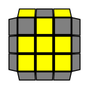
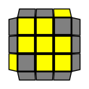
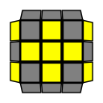
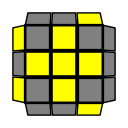
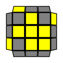
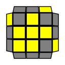

Before you start
ZBLL builds on things most CFOP solvers already half know. Getting these three in place first makes every ZBLL group much easier.
OCLL and PLL (28 algs)
When the last-layer edges are already oriented, OLL becomes one of just 7 cases, called OCLL (orient corners of the last layer). Add the 21 PLLs and you have a complete, two-look way to finish any oriented last layer.
Know these before you start, for two reasons:
- They're your fallback. While you're learning, any ZBLL case you don't know yet is solved with OCLL + PLL, so you never get stuck.
- The 7 OCLL shapes name the ZBLL sets. Every ZBLL case belongs to the set of its OCLL shape:







The eighth "shape" is when all four corners are already oriented: that's just a PLL, which you already know.
COLL recognition
Within each OCLL shape, the corners can be permuted (arranged) in 6 different ways. Telling those 6 apart is called COLL recognition, and it's the first half of recognising any ZBLL case: it narrows 72 cases in a set down to 12.
You read it from the colours on the corners' side stickers, for example:
- Headlights: two corner stickers of the same colour on one side.
- Opposite colours on a side, which often points to a diagonal swap.
- Whether the matching pairs are on the left, right, front or back.
You don't need to learn the COLL algs (one alg per corner pattern that also solves the corners). Most of them come up anyway as you learn ZBLL. What matters is the recognition. A good place to learn it is the COLL recognition playlist that the ZZ method's guide recommends.
Edge orientation
ZBLL only works when all four last-layer edges are oriented: their top-colour sticker (yellow, if you solve with yellow on top) already faces up, so you see a cross of that colour on top.
- In plain CFOP that only happens by luck, about 1 solve in 8.
- ZBLS orients the edges while you insert the last pair, so you get a ZBLL case every solve.
- Other methods, like ZZ (EOCross) or Petrus, orient the edges earlier in the solve.
You can start learning ZBLL before ZBLS. In ZBTrain the trainer always gives you a ZBLL case, so you can practise the algs now and add ZBLS later. In real solves, use ZBLL whenever the edges happen to be oriented.
Checklist
- ☐ I know the 7 OCLL algs and the 21 PLLs.
- ☐ I can tell the 6 corner patterns apart for at least one OCLL shape (start with T or U).
- ☐ I know how I'll get oriented edges in solves (ZBLS, or another method), or I'm happy to just drill for now.
Sources and further reading
- ZBLL Full Guide by Krzysztof Bloch (yoruba), ZZ Method
- ZBLL on the Speedsolving.com wiki
- COLL recognition video playlist (recommended in the ZZ guide)
- cubing.js for the cube animations